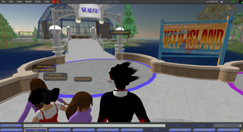

Help island
From SLIS Second Life Wiki
Contents |
1. You will see your name above your head. Looking around you may see others new to Second Life. You aren’t in the actual world right now, you are on Help Island.
2. Use the arrow keys to walk around. Later you will learn to fly and drive!
3. Don’t worry yet about all the chat functions and buttons on your screen, as you go through Help Island you will learn how to use them.
4. Looking around you will see four circles of different colors. Above each circle is a sign.

5. The signs read appearance, move, search, and communicate. These areas each teach you different things about second life.
6. Whenever you see a sign in any of these areas that says touch to learn, hover your mouse over it and click to receive information in the form of a note card. When you decide to keep your note card you can access it in your inventory.
7. Many things are interactive in Second Life, and you interact with them by touching them, or clicking your mouse on them.
8. Don’t worry yet about all the chat functions and buttons on your screen, as you go through Help Island you will learn how to use them.
{kind=link}
Appearance
{kind=link}
- Appearance teaches you how to change your facial features and hair.
- When you first walk in you will see a sign. Click on it and choose to keep your new shirt!
- Walk up the steps to your left. You will arrive at a set of posters. If you click on one of the posters you will get a body shape that you can later alter.
- Walk up the stairs to the edit appearance mode sign. Click on it to edit your appearance (change the way you look).
- When you come back down the stairs click on the sign in front of the library to figure out how to access your inventory.
Search
- Search teaches you how to find things in Second Life.
- Click on items within the rotunda to find out more about how to locate things in SL.
- By clicking on the screen after you exit the rotunda you will be able to watch movies.
{kind=link}
Move
{kind=link}
- Move teaches you how to fly and drive.
- To drive the vehicle, hover your mouse over the vehicle, and click on it. This will make your avatar get in. Then, you can drive around using the arrow keys.
- To fly around, press page button and up arrow at the same time (on a Mac, press the fn button and up arrow).
Communicate
{kind=link}
- Communicate teaches you how to chat and talk to others in Second Life. You will meet three statues.
- The first will tell you to visit his brother up the path and mention a book.
- When you get to the second, click on the history button to find which book he mentioned. When you get to the third, look in your inventory, under your library, for the hula gesture. Do the hula and you will pass this portion of help island.
Exiting Help Island
To get off help island you need to complete each tutorial in all four of the areas. Once you have done so, you will be offered a teleport to Orientation Island.